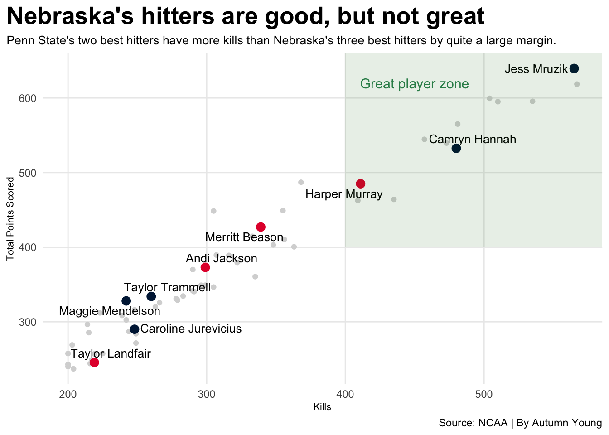
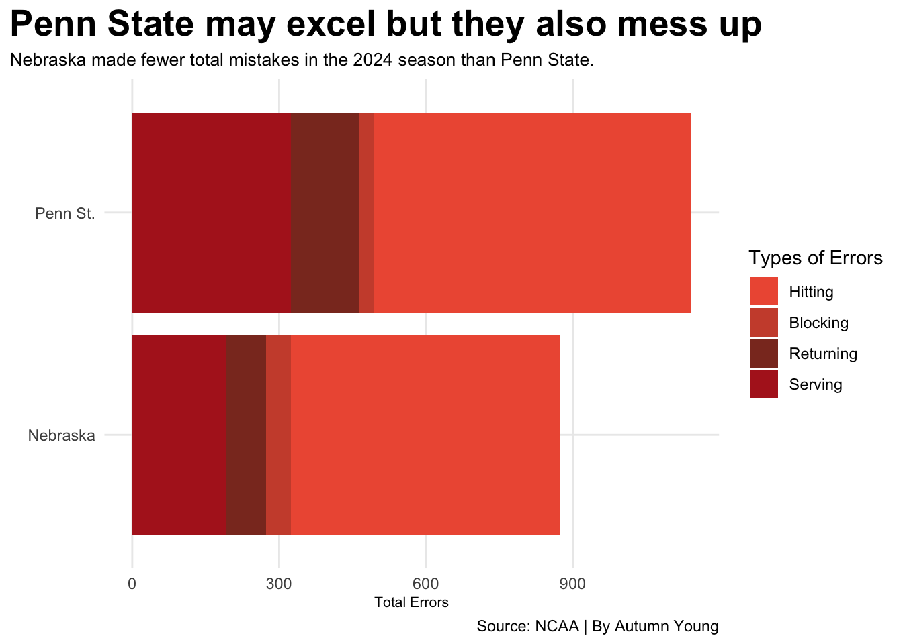

Is Penn State volleyball better than Nebraska Volleyball?
ncaa
volleyball
bigten
Author
Autumn Young
Published
May 4, 2025
Nebraska volleyball has long been regarded as one of the best if not the best college volleyball program in the nation. With five NCAA championship wins under their belt and being the all-time wins leader for any Division 1 school in NCAA volleyball history, it’s no wonder they are thought of so highly. All this time though there is one team that continues to be a threat to Nebraska’s greatness.
Penn State has won eight NCAA championships, their most recent being in 2024 after going a decade without winning one. Penn State could be that thorn in Nebraska’s side that threatens their greatness.
Penn State has more attacks, digs, and aces than Nebraska.
Team
Total Attacks
Digs
Aces
Penn St.
4673
1994
203
Minnesota
4226
1869
181
Purdue
4191
1841
146
Nebraska
4114
1856
155
Southern California
4091
1586
184
Wisconsin
4090
1785
183
Ohio St.
4086
1665
177
Michigan
4081
1633
181
Iowa
4024
1573
178
Washington
3970
1612
190
Oregon
3915
1637
202
Michigan St.
3877
1595
157
Illinois
3793
1411
183
Indiana
3774
1393
171
UCLA
3766
1513
125
Maryland
3722
1465
223
Northwestern
3488
1343
146
Rutgers
3441
1243
142
By: Autumn Young | Source: NCAA
When comparing Penn State to Nebraska in the categories of total attacks, digs, and aces in the 2024 season, Penn State has more of all three. Penn State has 4673 attacks while Nebraska has 4114. Nebraska has 1856 digs where Penn State has 1994 digs. Lastly, Penn State had 203 aces (serves that were not played by the opponent), and Nebraska only had 155 aces. In fact, Penn State had the most total attacks and digs in the Big Ten Conference.
Code
ggplot() +geom_point(data=attackers, aes(x=kills, y=pts),color="gray84") +geom_point(data=neattackers, aes(x=kills, y=pts), color="#E41C38", size=3 ) +geom_point(data=puattackers, aes(x=kills, y=pts), color="#001E44", size=3 ) +geom_text_repel(data=neattackers, aes(x=kills, y=pts, label=name), size=3.5) +geom_text_repel(data=puattackers, aes(x=kills, y=pts, label=name), size=3.5 ) +annotate("rect", fill ="darkgreen", alpha =0.1, xmin =400, xmax =Inf,ymin =400, ymax =Inf) +geom_text(aes(x=450, y=620, label="Great player zone"), size=4, color="seagreen") +labs(x="Kills", y="Total Points Scored", title="Nebraska's hitters are good, but not great", subtitle="Penn State's two best hitters have more kills than Nebraska's three best hitters by quite a large margin.", caption="Source: NCAA | By Autumn Young" ) +theme_minimal() +theme(plot.title =element_text(size =20, face ="bold"),axis.title =element_text(size =8), plot.subtitle =element_text(size=10), panel.grid.minor =element_blank(),plot.title.position ="plot" )

It is no doubt that Nebraska has some amazing hitters. Harper Murray, Merritt Beason, and Andi Jackson all clean up on the courts, but is it possible that other hitters are getting more kills and scoring more points than them? It’s very possible. Penn State has two hitters that are hitting more and scoring more points than Nebraska’s top three hitters. Penn State’s Jess Mruzik has the second most kills in the Big Ten with 565 kills. She is only beaten by Purdue’s Eva Hudson who has 567 kills. When comparing the total attacks, Mruzik comes out on top with 1497 attacks; 20 more than Hudson. More importantly, it is far more than any Nebraska hitter. Jess Mruzik and Camryn Hannah both far outperform Nebraska’s three best hitters. Harper Murray is the only Nebraska hitter that could be argued to rival their hitting records.
Code
ggplot() +geom_bar(data=pen_neb_long, aes(x=reorder(team, errors) , weight=errors, fill=factor(Type))) +scale_fill_manual(values=c("tomato2","tomato3","tomato4","firebrick"), name="Types of Errors", labels=c("Hitting", "Blocking", "Returning", "Serving")) +coord_flip() +theme_minimal() +theme(plot.title =element_text(size =20, face ="bold"),axis.title =element_text(size =8), plot.subtitle =element_text(size=10), panel.grid.minor =element_blank(),plot.title.position ="plot" ) +labs(x="", y="Total Errors", title="Penn State may excel but they also mess up", subtitle="Nebraska made fewer total mistakes in the 2024 season than Penn State.", caption="Source: NCAA | By Autumn Young" )

At this point Penn State seems almost unstoppable, but maybe there is hope for Nebraska yet. There is one area that Nebraska does excel. They make less mistakes. When four different error categories (hitting, blocking, returning, and serving), Penn State racked up over 1000 mistakes in the 2024 season. Meanwhile, Nebraska managed to stay under 900 mistakes for the season. So maybe Nebraska is just as good as Penn State or better, but it is hard to tell since Penn State beat Nebraska in the NCAA semi-final and ended up winning the whole championship.